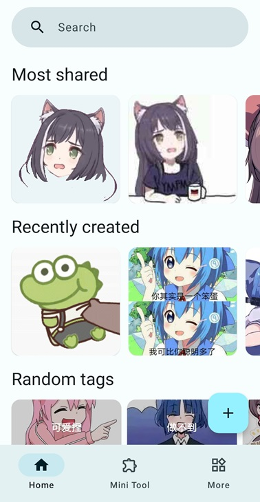
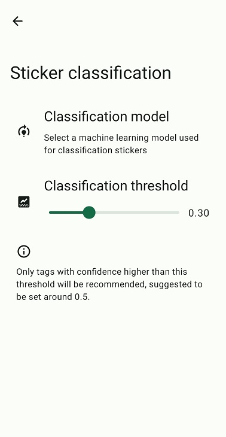

Rays 速查表：8 个问答把这款表情管理工具讲透
整理一篇关于 Rays 的快问快答——它是什么、谁该用、怎么装、核心功能、和相册的差异、换机迁移、长期维护策略，一次性交代清楚。
整理一篇关于 Rays 的快问快答——如果你正在犹豫要不要装、装了之后怎么用、换机时怎么不丢图，这 8 个问答覆盖了。
Rays 是什么？一句话说清
Rays 是一款 Android 端的本地表情包管理工具。它不做社交、不做聊天，只做一件事：把你散落在相册、下载、微信、截图里的表情图集中起来，给它们打标签、做 OCR、建索引，让你在斗图的时候一秒搜出来。
它走的是本地存储路线——表情图存在手机上，不上传服务器，不做云同步（但支持你自己配 WebDAV）。安装包从早期版本的 70+ MB 一路优化到最新约 19.5 MB，体积控制得不错。
谁该装？谁可以跳过
该装的：
- 表情包超过 50 张，经常在聊天里斗图、但每次都要翻半天找图的人
- 喜欢给表情打标签、按情绪或角色分类的整理控
- 换机迁移时怕表情库丢的
可以跳过的：
- 表情图不多，翻两下就能找到
- 只用自带相册或文件夹管理就能满足
- 非 Android 用户
装之前可以先去 Rays官网 看看实际效果，确认是不是你要的场景。
安装流程四步走
拿到安装包有四条必经的步骤：打开分享页 → 转存到自己的网盘再下载 → 允许这次安装 → 装好打开。
为什么要"先转存再下载"，而不是直接点开安装？因为网盘分享页有时会限流或临时失效，转存到你自己的网盘后下载更稳定，之后重装也方便再取。
系统会弹"禁止安装未知来源应用"的提示——这是 Android 的安全机制，不是 Rays 有问题。处理方法也简单：给你刚才下载文件的那个来源（浏览器或文件管理器）开一次安装许可就行，不需要改系统全局的"允许未知来源"开关，更安全。

装好之后五分钟内能做什么
五分钟收进第一批表情。最推荐的路径是从本地文件批量导入：打开 Rays，点右下角 + 按钮，在选择界面里找到你手机存储里的图片文件夹，多选后保存就行。一次选几十张没问题。
相册里的表情图通常散在 Download、微信、QQ、截图这几个文件夹里，一个个翻一下，收个 50 张左右就够起步了。动图 GIF 也能收，但 OCR 只识别第一帧，这个要注意。
收进来之后花三分钟给它们打标签——按来源、按角色主题、按情绪，三张图至少打一个。标签是你未来一秒找到这张图的关键，这步省不得。AI 推荐标签可以打底，但推荐结果不一定准，得审核一下，手打永远作数。标签和搜索的组合拳怎么玩得更溜，去 Rays文档 翻一下。
为什么不直接用相册或文件夹管表情
相册的设计目标是照片，不是表情包。它没有标签、不能搜图上的字（图上写着"好的收到"，相册搜不到这四个字）、没有相似图搜索、搜索域不可选。按文件夹分类更要命——一张图只能在一个文件夹里，那张"原神派蒙懵逼"到底放原神/还是吐槽/？复制一份占双倍空间。三个月后分类体系自己都看不懂。
Rays 的核心价值不在于存，在于取。标签是多维度索引——一张图可以同时打"原神""派蒙""吐槽"三个标签，下次按任何一个都能找到。相册是时间线，文件夹是单维度分类，Rays 是精准命中。
当然 Rays 不是要替代相册——你拍的照片、下载的壁纸还是归相册管。Rays 只管你那些用来斗图的、用来表达情绪的、需要一秒找到的表情。两个工具各管各的。

换机迁移：三次验证点不能省
换机是表情库最容易丢数据的场景。完整流程分三个阶段：旧手机导出 → 传输到新手机 → 新手机导入。
旧手机先导出数据文件，存到手机内部存储的 Download 或公共目录。导出完成后，看一眼文件大小——应该是表情图总大小的量级，不是几 KB 的小文件。然后再备份一份到网盘，双保险。
传输方式推荐 USB 数据线（最稳），其次是无线传输（AirDrop、快传）。微信文件传输助手会压缩大文件，表情图多的话别用。
新手机装好 Rays 后导入，导入完成后手动验证五个检查项：表情数量对上、标签还在、收藏标记还在、OCR 结果正常、搜索正常。先别急着删旧手机的数据——保留几天，确认新手机完全没问题再删。
三个容易踩的坑：导出后立刻卸载旧手机、传输过程文件损坏、新旧版本差异大导致导入失败（试试先装旧版本导入再升级）。三次验证点：导出后看大小、传输后对比大小、导入后抽查。三次都过了才叫成功。
长期维护：每天一张不费事
表情库维护不需要花大块时间，关键是日常习惯养成。看到好图顺手收进来、给新图打标签、定期清理重复图。Rays 支持系统分享面板直接收图——在任意应用里长按图片 → 选分享 → 找到 Rays 图标 → 填标题和标签保存，打断最少。
每两三个月可以跑一次导出备份到网盘，确保万无一失。WebDAV 同步如果配好了更省心——旧手机触发同步、新手机配置同一个账号就自动拉取，但这个得提前配好才行。
和同类比一下：为什么选 Rays 不选别的
市面上也有其他表情管理工具，比如专门的表情面板、带斗图功能的输入法。Rays 和它们最大的区别是专注本地、不做多余功能：没有账号体系、没有云存储、没有社区，全部精力放在本地搜索和标签索引上。
装不装 Rays 的判断标准其实很简单：每次要发表情时，你能不能在 3 秒内翻到那张图。如果每次都要翻相册、翻文件夹、翻聊天记录里的图片消息，Rays 就是为你做的。
最后一句：表情图超过 50 张又不想丢，装一个吧——五分钟起步、三次验证换机不丢、日常顺手收一张不费事，值。这套资料在 GitHub、Gitee 和 GitCode 三个仓库都能拿到，维护者按分类整理，国内访问也顺。